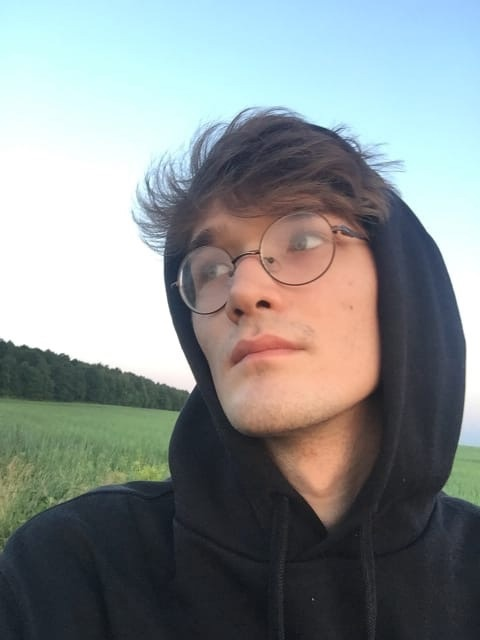

Алмаз Тухватуллин
Привет! Я начинающий FrontEnd-разработчик. Я отлично владею HTML, CSS, JS. В своих проектах я применяю Flexbox, препроцессор SCSS, методологию БЭМ. На данный момент я занимаюсь версткой и разработкой различных проектов. Я всегда рад людям, интересным проектам и таким же веселым энтузиастам как я.
Навыки
На данный момент я владею языком гипертекстовой разметки HTML, каскадными таблицами стилей CSS, использую препроцессор SCSS. В верстке веб-страниц я использую Flexbox, методологию БЭМ, а также язык программирования JavaScript, если этого требует функционал сайта.
В своих проектах я сам создаю дизайн вебсайта, использую ванильный JavaScript.
Посмотреть работы
В своих проектах я сам создаю дизайн вебсайта, использую ванильный JavaScript.
Образ жизни
Свое свободное время я стараюсь проводить продуктивно. Каждый день я либо занимаюсь версткой веб-страниц, либо разработкой проектов. Я стараюсь всегда учиться новому в свере разработки.
На данный момент я студент КГЭУ на факультете Вычислительных технологий.
На данный момент я студент КГЭУ на факультете Вычислительных технологий.
Планы на будущее
Я очень хочу найти команду разработчиков и дизайнеров любого уровня для выполнения общих проектов. Мне было бы приятно поучавстовать в Game Jam с командой в качестве тестера или композитора саундтреков.